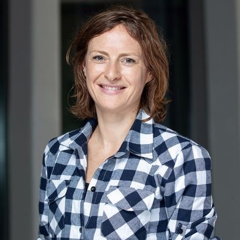

Associate Professor, New York University Abu Dhabi Leader of the ECLECTIC group: Website H-index: 26 Email: amandine.cornille@nyu.edu

Impact of global changes on wild and cultivated tree diversities